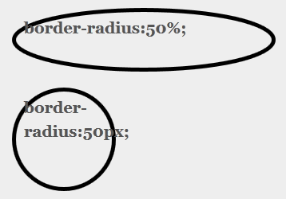

前端模块化开发的价值
李杰
- 1. 为什么要使用模块化的javascript？
- 2. 如何编写模块化的javascript？
- 3. AMD & CMD
- 4. 模块化加载器的实现
- 5. 拥抱ES6
为什么要使用模块化的javascript？
任何语言一到大规模应用的时候,必然要经历拆分模块的过程,以便利于维护和团队的协作
在前端项目中经常使用到的如jQuery、underscore.js等库，其实就可以看作是公共模块，它们对常用的、工具性的代码提供了抽象
模块化的价值
- 公共模块通常用于促进代码的复用
- 业务模块通过用于提升代码的可维护性
- 命名冲突
- 文件依赖
- 模块版本管理
- 前端性能优化
- ...
举个栗子？
//遍历数组
function each( arr ){}
//记录日志
function log(str){}
并将这些函数统一放到utils.js里,需要用到时,引入该文件就行
引入命名空间
var org = {};
org.Site = {};
org.Site.Utils = {};
org.Site.Utils.isString = function(){
//...
}
org.Site.Utils.isArray = function(){
//...
}
并将这些函数统一放到utils.js里,需要用到时,引入该文件就行
另一个问题
文件依赖
<script> src="utils.js"></script>
<script> src="dialog.js"></script>
<script>
org.Site.Dialog.init({ /*传入配置*/ })
</script>
出错了???
<script> src="dialog.js"></script>
<script>
org.Site.Dialog.init({ /*传入配置*/ })
</script>
其它的问题...
- 通用组更新了前端的基础类库, 却很难推动全站升级
- 业务组想用一个新的通用组件,却无法通过几行代码搞定
- 老的项目只能基本老的类库接续开发,升级困难
- 公司整合业务,需要合并产品线,发现前端代码冲突
- ...
如何编写模块化的javascript
模块是什么?
可组合, 分解和更换的单元
可组成系统的, 具有某种确定的独立的功能的子系统
是较大系统的独立部件
功能, 状态与接口反映外部特性, 逻辑反映反映内部特性
前端模块抽离的原则
充分了解产品的需求, 熟读PRD
深度挖掘产品的需求, 提炼模块
从视觉规范中抽离高耦合,高相似的部分
模块化业务需求中的重合部分
暴露接口实现格式间的通讯

Why Seajs ?
SeaJS是一个遵循CMD规范的JavaScript模块加载框架，可以实现JavaScript的模块化开发及加载机制。
优点
简单友好的模块定义规范
自然直观的代码组织方式
define( function( require, exports ){
function log(){
//...
}
function each(){
//...
}
exports.log = log;
exports.each = each;
} );
//utils.js
define( function( require, exports ){
var util = require('./utils.js');
var Component = {
doSth: function(){
util.log('log....');
}
};
return Component;
} );
//Component.js
AMD & CMD
主要区别


CMD推崇依赖就近,可以把依赖写进代码的任意一行
AMD推崇依赖前置,在解析和执行模块之前,就必须指明当前模块的依赖
模块化加载器的实现
避免不必要的复杂
Doctype：
<!DOCTYPE html PUBLIC "-//W3C/DTD XHTML 1.0 Strict//EN" "http://www.w3.org/TR/xhtml1/DTD/xhtml1-strict.dtd">
<!DOCTYPE html">
编码：
<meta http-equiv="Content-Type" content="text/html; charset=utf-8" />
<meta charset="utf-8" />
同时，用link元素引用样式表，type="text/css"是可以省略的；script元素的type=”text/javascript”也可以不写
文字遮罩效果
- DEMO: 上图实际效果
- 应用: CSS3 Mask text
- 应用: CSS3光影划过文字效果
这种效果以前可能更多出现在flash动画中，如今CSS3不过是信手拈来。
文字描边、镂空效果
以前是不是从没试过不用图片，而直接使用css实现这种效果？那么，从现在开始，你可以去尝试看看，展示你的与众不同
圆角、阴影、半透明效果

- DEMO: CSS3圆角效果
- DEMO: CSS3阴影效果、CSS3凹陷阴影应用
- DEMO: CSS3文字阴影一览、火焰文字、霓虹文字
- DEMO: CSS3惊艳按钮、闪烁按钮、常用按钮、Q版按钮
CSS3将使得你可以轻松的创建更丰富多彩的页面应用，往昔的头痛问题都迎刃而解
形变扭曲效果
过渡、动画效果
CSS3过渡与动画在部分程度上简化了之前需要由js或者flash来实现的效果
激动人心的JS API
Web Storage
- sessionStorage
- localStorage
客户端的本地存储能力，根据W3C Web Storage的说明，Web Storage的存储空间至少有5MB。Web Storage 分为两种， sessionStorage 和 localStorage，顾名思义，sessionStorage用于本地存储一个会话（session）中的数据，这些数据只有在同一个会话中的页面才能访问并且当会话结束后数据也随之销毁。因此sessionStorage不是一种持久化的本地存储，仅仅是会话级别的存储。localStorage用于持久化的本地存储，除非主动删除数据，否则数据是永远不会过期的。
Web Socket
客户端可以利用WebSocket协议和主机进行双向通信，比XmlHttpRequest更加强大、高效和减少流量及延迟。
Web Workers
允许客户端像C++等高级编程语言那样，将一些耗费时间的纯运算操作，以类似线程的方式来运行在非UI线程中，并以消息（Message）机制进行通信。Web Workers 是 HTML5 提供的一个javascript多线程解决方案，我们可以将一些大计算量的代码交由web Worker运行而不冻结用户界面。
HTML5在游戏上的进展
HTML5游戏一览
HTML5游戏网站
- http://www.html5china.com/game/
- http://canvasrider.com/tracks/all (自行车骑士)
- http://html5games.com/
- http://www.html5games.net/
- https://chrome.google.com/webstore/category/home
- https://gaming.mozillalabs.com/games/
- https://chrome.google.com/webstore/category/home
- http://www.canvasdemos.com/type/games/
Question? Q&A
The End
Thank You